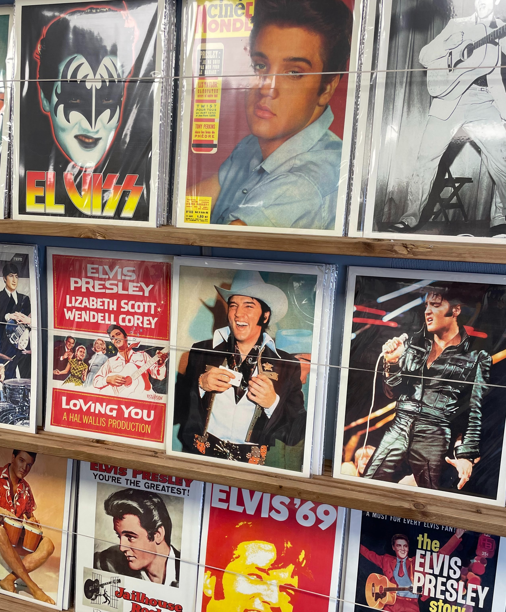
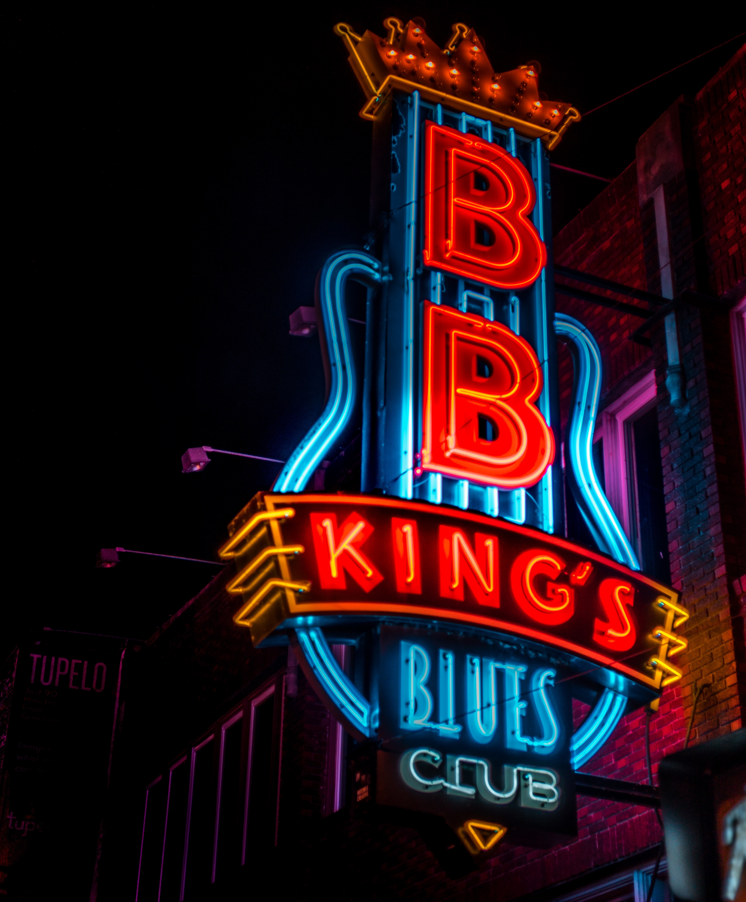
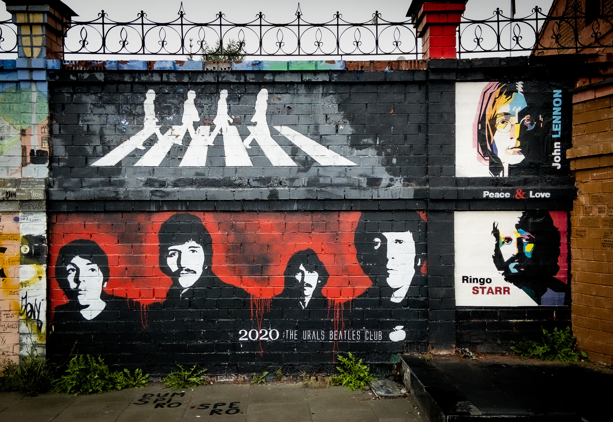
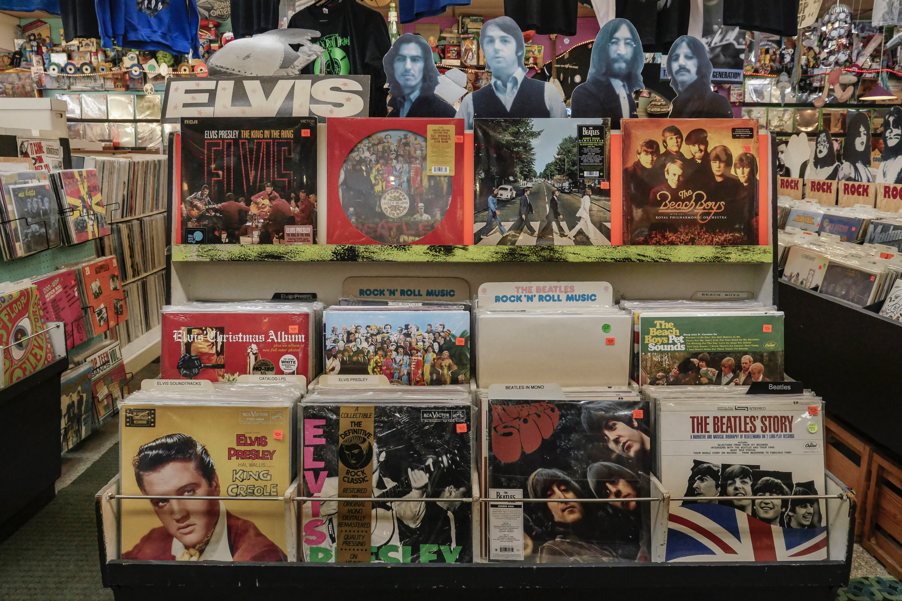

Late 1940s-mid-1960s
 
The foundations of rock music are in rock and roll, which originated in the United States during the late 1940s and early 1950s, and quickly spread to much of the rest of the world. Its immediate origins lay in a melding of various black musical genres of the time, including rhythm and blues and gospel music, with country and western.
Rock and roll has been seen as leading to a number of distinct subgenres, including rockabilly, combining rock and roll with "hillbilly" country music, which was usually played and recorded in the mid-1950s by white singers such as Elvis Presley.
Hispanic and Latino American movements in rock and roll, which would eventually lead to the success of Latin rock and Chicano rock within the US, began to rise in the Southwest.
Mid-1960s-early 1990s

Rock musicians in the mid-1960s began to advance the album ahead of the single as the dominant form of recorded music expression and consumption, with the Beatles at the forefront of this development.
Metallica's single “Enter Sandman” set radio and MTV ablaze in July 1991.
Nirvana's “Smells Like Teen Spirit” is often listed as the most important song of the 1990s.
Perry Farrell of Jane's Addiction created Lollapalooza, a roving extravaganza of sound that introduced the masses to underground genres.
Early 1990s-late 2000s

From the 1990s, alternative rock began to dominate rock music and break into the mainstream in the form of Britpop, and indie rock.
Further fusion subgenres have since emerged, including electronic rock, and conscious attempts to revisit rock's history, including the garage rock post-punk techno-pop revivals in the 2000s.
This period was a time of great experimentation and innovation, leading to the diverse range of rock sub-genres we see today.
2010s-2020s

Since the 2010s, rock has lost its position as the pre-eminent popular music genre in world culture, but remains commercially successful.
The increased influence of hip-hop and electronic dance music can be seen in rock music, notably in the techno-pop scene of the early 2010s and the pop-punk-hip-hop revival of the 2020s.